核心价值
Objective-c 是动态语言
内存管理原理
Objective-C 的内存管理机制与.Net/Java 那种全自动的垃圾回收机制是不同的，它本质上还是 C 语言中的手动管理方式，只不过稍微加了一些自动方法。
//Objective-C的对象生成于堆之上，生成之后，需要一个指针来指向它。
ClassA *obj1 = [[ClassA alloc] init];
//Objective-C的对象在使用完成之后不会自动销毁，需要执行dealloc来释放空间（销毁），否则内存泄露。
[obj1 dealloc];
//--------------------------------------------
//这带来了一个问题。下面代码中obj2是否需要调用dealloc？
//--------------------------------------------
ClassA *obj1 = [[ClassA alloc] init];
ClassA *obj2 = obj1;
[obj1 hello]; //输出hello
[obj1 dealloc];
[obj2 hello]; //能够执行这一行和下一行吗？
[obj2 dealloc];
//--------------------------------------------
//不能，因为obj1和obj2只是指针，它们指向同一个对象，[obj1 dealloc]已经销毁这个对象了，不能再调用[obj2 hello]和[obj2 dealloc]。obj2实际上是个无效指针。
//--------------------------------------------
如何避免无效指针？
Objective-C 采用了引用计数(ref count 或者 retain count)。对象的内部保存一个数字，表示被引用的次数。例如，某个对象被两个指针所指向（引用）那么它的 retain count 为 2。需要销毁对象的时候，不直接调用 dealloc，而是调用 release。release 会让 retain count 减 1，只有 retain count 等于 0，系统才会调用 dealloc 真正销毁这个对象。
ClassA *obj1 = [[ClassA alloc] init]; //对象生成时，retain count = 1
[obj1 release]; //release使retain count减1，retain count = 0，dealloc自动被调用,对象被销毁
///我们回头看看刚刚那个无效指针的问题，把dealloc改成release解决了吗？
ClassA *obj1 = [[ClassA alloc] init]; //retain count = 1
ClassA *obj2 = obj1; //retain count = 1
[obj1 hello]; //输出hello
[obj1 release]; //retain count = 0，对象被销毁
[obj2 hello];
[obj2 release];
///[obj1 release]之后，obj2依然是个无效指针。问题依然没有解决。
//---> 解决方法见下一条。
///Objective-C指针赋值时，retain count不会自动增加，需要手动retain。
ClassA *obj1 = [[ClassA alloc] init]; //retain count = 1
ClassA *obj2 = obj1; //retain count = 1
[obj2 retain]; //retain count = 2
[obj1 hello]; //输出hello
[obj1 release]; //retain count = 2 – 1 = 1
[obj2 hello]; //输出hello
[obj2 release]; //retain count = 0，对象被销毁
//--------------------------------------------
//问题解决！注意，如果没有调用[obj2 release]，这个对象的retain count始终为1，不会被销毁，内存泄露。
//--------------------------------------------
//--> 这样的确不会内存泄露，但似乎有点麻烦，有没有简单点的方法？见下一条。
/// Objective-C中引入了autorelease pool（自动释放对象池），在遵守一些规则的情况下，可以自动释放对象。（autorelease pool依然不是.Net/Java那种全自动的垃圾回收机制）
// 新生成的对象，只要调用autorelease就行了，无需再调用release！
ClassA *obj1 = [[[ClassA alloc] init] autorelease]; //retain count = 1 但无需调用release
// 对于存在指针赋值的情况，代码与前面类似。
ClassA *obj1 = [[[ClassA alloc] init] autorelease]; //retain count = 1
ClassA *obj2 = obj1; //retain count = 1
[obj2 retain]; //retain count = 2
[obj1 hello]; //输出hello
//对于obj1，无需调用（实际上不能调用）release
[obj2 hello]; //输出hello
[obj2 release]; //retain count = 2-1 = 1
// 细心的读者肯定能发现这个对象没有被销毁，何时销毁呢？谁去销毁它？请看下一条。
///autorelease pool原理剖析。（其实很简单的，一定要坚持看下去，否则还是不能理解Objective-C的内存管理机制。）
///autorelease pool不是天生的，需要手动创立。只不过在新建一个iphone项目时，xcode会自动帮你写好。autorelease pool的真名是NSAutoreleasePool。
NSAutoreleasePool *pool = [[NSAutoreleasePool alloc] init];
///NSAutoreleasePool内部包含一个数组（NSMutableArray），用来保存声明为autorelease的所有对象。如果一个对象声明为autorelease，系统所做的工作就是把这个对象加入到这个数组中去。
ClassA *obj1 = [[[ClassA alloc] init] autorelease]; //retain count = 1，把此对象加入autorelease pool中
///NSAutoreleasePool自身在销毁的时候，会遍历一遍这个数组，release数组中的每个成员。如果此时数组中成员的retain count为1，那么release之后，retain count为0，对象正式被销毁。如果此时数组中成员的retain count大于1，那么release之后，retain count大于0，此对象依然没有被销毁，内存泄露。
///默认只有一个autorelease pool，通常类似于下面这个例子。
int main (int argc, const char *argv[])
{
NSAutoreleasePool *pool;
pool = [[NSAutoreleasePool alloc] init];
/// do something
[pool release];
return (0);
} // main
///所有标记为autorelease的对象都只有在这个pool销毁时才被销毁。如果你有大量的对象标记为autorelease，这显然不能很好的利用内存，在iphone这种内存受限的程序中是很容易造成内存不足的。例如：
int main (int argc, const char *argv[])
{
NSAutoreleasePool *pool = [[NSAutoreleasePool alloc] init];
int i, j;
for (i = 0; i < 100; i++ )
{
for (j = 0; j < 100000; j++ )
[NSString stringWithFormat:@"1234567890"];//产生的对象是autorelease的。
}
[pool release];
return (0);
} // main
///（运行时通过监控工具可以发现使用的内存在急剧增加，直到pool销毁时才被释放）你需要考虑下一条。
///Objective-C程序中可以嵌套创建多个autorelease pool。在需要大量创建局部变量的时候，可以创建内嵌的autorelease pool来及时释放内存。（某些情况下，系统会自动创建autorelease pool, 请参见第四章）
int main (int argc, const char *argv[])
{
NSAutoreleasePool *pool = [[NSAutoreleasePool alloc] init];
int i, j;
for (i = 0; i < 100; i++ )
{
NSAutoreleasePool *loopPool = [[NSAutoreleasePool alloc] init];
for (j = 0; j < 100000; j++ )
[NSString stringWithFormat:@"1234567890"];//产生的对象是autorelease的。
[loopPool release];
}
[pool release];
return (0);
} // main
内存管理的口诀与范式
口诀: 谁创建，谁释放（类似于“谁污染，谁治理”）。
如果你通过 alloc、new 或 copy 来创建一个对象，那么你必须调用 release 或 autorelease。换句话说，不是你创建的，就不用你去释放。
例如，你在一个函数中 alloc 生成了一个对象，且这个对象只在这个函数中被使用，那么你必须在这个函数中调用 release 或 autorelease。如果你在一个 class 的某个方法中 alloc 一个成员对象，且没有调用 autorelease，那么你需要在这个类的 dealloc 方法中调用 release；如果调用了 autorelease，那么在 dealloc 方法中什么都不需要做。 范式就是模板，就是依葫芦画瓢。由于不同人有不同的理解和习惯，我总结的范式不一定适合所有人，但我能保证照着这样做不会出问题。
除了 alloc、new 或 copy 之外的方法创建的对象都被声明了 autorelease。
谁 retain，谁 release。只要你调用了 retain，无论这个对象是如何生成的，你都要调用 release。有时候你的代码中明明没有 retain，可是系统会在默认实现中加入 retain。不知道为什么苹果公司的文档没有强调这个非常重要的一点.
///创建一个对象。
ClassA *obj1 = [[ClassA alloc] init];
///创建一个autorelease的对象。
ClassA *obj1 = [[[ClassA alloc] init] autorelease];
//Release一个对象后，立即把指针清空。（顺便说一句，release一个空指针是合法的，但不会发生任何事情）
[obj1 release];
obj1 = nil;
///指针赋值给另一个指针。
ClassA *obj2 = obj1;
[obj2 retain];
///do something
[obj2 release];
obj2 = nil;
///在一个函数中创建并返回对象，需要把这个对象设置为autorelease
ClassA *Func1()
{
ClassA *obj = [[[ClassA alloc]init]autorelease];
return obj;
}
///在子类的dealloc方法中调用基类的dealloc方法
-(void) dealloc
{
…
[super dealloc];
}
///在一个class中创建和使用property。
///声明一个成员变量。
ClassB *objB;
///声明property，加上retain参数。
@property (retain) ClassB* objB;
///定义property。（property的默认实现请看第三章）
@synthesize objB;
///除了dealloc方法以外，始终用.操作符的方式来调用property。
self.objB 或者objA.objB
///在dealloc方法中release这个成员变量。
[objB release];
示例代码如下（你需要特别留意对象是在何时被销毁的。）：
@interface ClassA : NSObject
{
ClassB* objB;
}
@property (retain) ClassB* objB;
@end
@implementation ClassA
@synthesize objB;
-(void) dealloc
{
[objB release];
[super dealloc];
}
@end
//给这个property赋值时，有手动release和autorelease两种方式。
void funcNoAutorelease()
{
ClassB *objB1 = [[ClassB alloc]init];
ClassA *objA = [[ClassA alloc]init];
objA.objB = objB1;
[objB1 release];
[objA release];
}
void funcAutorelease()
{
ClassB *objB1 = [[[ClassB alloc]init] autorelease];
ClassA *objA = [[[ClassA alloc]init] autorelease];
objA.objB = objB1;
}
// @property (retain)和@synthesize的默认实现
// 在这里解释一下@property (retain) ClassB* objB;和@synthesize objB;背后到底发生了什么(retain property的默认实现)。property实际上是getter和setter，针对有retain参数的property，背后的实现如下:
@interface ClassA : NSObject
{
ClassB *objB;
}
-(ClassB *) getObjB;
-(void) setObjB:(ClassB *) value;
@end
@implementation ClassA
-(ClassB*) getObjB
{
return objB;
}
-(void) setObjB:(ClassB*) value
{
if (objB != value)
{
[objB release];
objB = [value retain];
}
}
//在setObjB中，如果新设定的值和原值不同的话，必须要把原值对象release一次，这样才能保证retain count是正确的。
//由于我们在class内部retain了一次（虽然是默认实现的），所以我们要在dealloc方法中release这个成员变量。
-(void) dealloc
{
[objB release];
[super dealloc];
}
系统自动创建新的 autorelease pool
在生成新的 Run Loop 的时候，系统会自动创建新的 autorelease pool（非常感谢网友 hhyytt 和 neogui 的提醒）。注意，此处不同于 xcode 在新建项目时自动生成的代码中加入的 autorelease pool，xcode 生成的代码可以被删除，但系统自动创建的新的 autorelease pool 是无法删除的（对于无 Garbage Collection 的环境来说）。Objective-C 没有给出实现代码，官方文档也没有说明，但我们可以通过小程序来证明。
在这个小程序中，我们先生成了一个 autorelease pool，然后生成一个 autorelease 的 ClassA 的实例，再在一个新的 run loop 中生成一个 autorelease 的 ClassB 的对象（注意，我们并没有手动在新 run loop 中生成 autorelease pool）
int main(int argc, char**argv)
{
NSLog(@"create an autorelasePool\n");
NSAutoreleasePool *pool = [[NSAutoreleasePool alloc] init];
NSLog(@"create an instance of ClassA and autorelease\n");
ClassA *obj1 = [[[ClassA alloc] init] autorelease];
NSDate *now = [[NSDate alloc] init];
NSTimer *timer = [[NSTimer alloc] initWithFireDate:now
interval:0.0
target:obj1
selector:@selector(createClassB)
userInfo:nil
repeats:NO];
NSRunLoop *runLoop = [NSRunLoop currentRunLoop];
[runLoop addTimer:timer forMode:NSDefaultRunLoopMode];
[timer release];
[now release];
[runLoop run]; //在新loop中调用一函数，生成ClassB的autorelease实例
NSLog(@"releasing autorelasePool\n");
[pool release];
NSLog(@"autorelasePool is released\n");
return 0;
}
输出如下：
create an autorelasePool
create an instance of ClassA and autorelease
create an instance of ClassB and autorelease
ClassB destroyed
releasing autorelasePool
ClassA destroyed
autorelasePool is released
注意在我们销毁 autorelease pool 之前，ClassB 的 autorelease 实例就已经被销毁了。
有人可能会说，这并不能说明新的 run loop 自动生成了一个新的 autorelease pool，说不定还只是用了老的 autorelease pool，只不过后来 drain 了一次而已。我们可以在 main 函数中不生成 autorelease pool。
int main(int argc, char**argv)
{
NSLog(@"No autorelasePool created\n");
NSLog(@"create an instance of ClassA\n");
ClassA *obj1 = [[ClassA alloc] init];
NSDate *now = [[NSDate alloc] init];
NSTimer *timer = [[NSTimer alloc] initWithFireDate:now
interval:0.0
target:obj1
selector:@selector(createClassB)
userInfo:nil
repeats:NO];
NSRunLoop *runLoop = [NSRunLoop currentRunLoop];
[runLoop addTimer:timer forMode:NSDefaultRunLoopMode];
[timer release];
[now release];
[runLoop run]; //在新loop中调用一函数，生成ClassB的autorelease实例
NSLog(@"Manually release the instance of ClassA\n");
[obj1 release];
return 0;
}
输出如下:
No autorelasePool created
create an instance of ClassA
create an instance of ClassB and autorelease
ClassB destroyed
Manually release the instance of ClassA
ClassA destroyed
我们可以看出来，我们并没有创建任何 autorelease pool，可是 ClassB 的实例依然被自动销毁了，这说明新的 run loop 自动创建了一个 autorelease pool，这个 pool 在新的 run loop 结束的时候会销毁自己（并自动 release 所包含的对象）。
补充说明
在研究 retain count 的时候，我不建议用 NSString。因为在下面的语句中， NSString *str1 = @”constant string”; str1 的 retain count 是个很大的数字。Objective-C 对常量字符串做了特殊处理。 当然，如果你这样创建 NSString，得到的 retain count 依然为 1 NSString *str2 = [NSString stringWithFormat:@”123”];
数据类型
NSNumber 和 NSValue 对基础 C 数据类型的对象化封装
由于 Objective-C 中常用的数据容器，如 NSArray，NSDictionary 等，只能处理 Objective-C 中的对象级别的数据类型，对于 C 中的很多数据类型，如 int，float 等，无法直接处理。针对这个问题，Objective-C 提供了两种存储数据的对象 NSNumber 和 NSValue，能将 C 中的基本数据类型，包括数值型和结构体型的数据转化成 Objective-C 可以处理的对象。
NSNumber 和 NSValue 都能将 C 中的基本数据类型转化成 Objective-C 中的对象。
C 中的基本数据类型 <> NSValue
1. C 中的基本数据类型转换成 NSValue
NSValue *value = [NSValue valueWithBytes:&result objCType:@encode(int)];
// 其中，result是基本数据的值，int是我们要转化的基本数据类型
2. NSValue 转化成 C 中的基本数据类型
[value getValue:&result];
// 其中，value是一个NSValue类型的对象，result是一个已知的类型的基本数据类型。经过这样的转化，NSValue中保存的数值就放到了result中了
C 中的基本数据类型 <> NSNumber
NSNumber 是 NSValue 的子类，它的出现我理解的就是更加方便了除结构体以外的 C 中的基本数据类型和 Objective-C 中对象的相互转化，NSNumber 本身提供了很多类方法和实例方法，可以完成这些操作。
1. C 中的基本数据类型转换成 NSNumber
NSNumber *number = [NSNumber numberWithInt:3];
2. NSNumber 转换层 C 中的基本数据类型
NSInteger result = [number integerValue];
NSString 为何要用 COPY 属性
copy 属性将制造一个传入对象的副本并且将指针指向这个新副本。
@property (copy) NSString *lastName;
此时生成的 setter 方法应该是:
- (void)setLastName:(NSString *)d
{
lastName = [d copy];
}
类似这样:
// Create a mutable string
NSMutableString *x = [[NSMutableString alloc] initWithString:@"Ono"];
// Pass it to setLastName:
[myObj setLastName:x];
// 'copy' prevents this from changing the lastName
[x appendString:@" Lennon"];
此时你将 x 传给 setLastName：方法后，lastName 指向的对象并不是 x，而是 x 的副本，此时 x 属性发生改变并不会对 lastName 造成影响，是一种切断关联的拷贝方式。copy 保证了内容不会意外改变。
语法特点
@property 的属性 strong 和 weak 如何理解？
在 ObjectiveC 里，用@property 访问所有的实例变量。@property 有一对属性：strong 和 weak。
官方文档里的解释晦涩难懂；Stack Overflow 里的用户 RDC 给出了形象的解释：
把对象想象成一条狗，它要跑 (be deallocated)。
-
强指针就像一条拴在狗脖子上的狗链；只要攥在手里，狗就跑不了；如果 5 个人攥着 5 条狗链都拴着狗 (5 个强指针指向对象)，除非 5 条狗链都撒开，狗就跑不了。
-
弱指针就像是孩子指着狗喊“看！狗！”；只要狗链还拴着狗，孩子就能指着狗喊。当所有狗链都撒开，不管有多少孩子指着狗喊，狗都跑了。当最后一个强指针不再指向对象，对象就会被释放，所有弱指针清零。我们什么时候使用弱指针呢？只有当你想避免保留循环 (retain cycles,) 时，我们才使用它。
@selector 与 SEL 如何理解？
场景
异型进度条的时候用到了定时器 NSTimer,其中定时器的启动是这么写的：
_timer = [NSTimer scheduledTimerWithTimeInterval:0.1
target:self
selector:@selector(circleAnimationTypeOne)
userInfo:nil
repeats:YES];
简介
- Selector 是一个对象中用来选择方法来执行的名字，或者是当源代码编译时候用来替换名字的唯一的标示。
- Selector 自己并不能做任何事情。它简单的标示了一个方法。使得 selector 方法名称不同于普通字符串的唯一的事情是编译器确定 selectors 是独特的。使得 selector 有用的是（与运行时结合）它扮演着类似于一个动态函数指针，对于一个已经给与的名字，自动指向类所使用的适用的方法的实现。假设我们有一个 run 方法的 selector，并且类 Dog，Athlete 和 ComputerSimulation（每个类都实现了 run 方法）。
- Selector 能够被每一个类的实例所使用并且调用它的 run 方法--设置方法的实现可能是互不相同的。
如何获得 Selector
被编译的 selectors 是 SEL 类型的。有两种方式获得 selector：
- 在编译期，我们使用编译标示@selector
SEL aSelector = @selector(methodName);
- 在运行时，我们使用 NSSelectorFromString 方法，字符串是方法名：
SEL aSelector = NSSelectorFromString(@"methodName");
// 当我们想要我们的代码发送一个知道运行时我们才知道名字的消息的时候，我们使用selector创建一个字符串。
如何使用 Selector
能够调用以 selector 为参数的 performSelector:的方法并且其他类似的方法来使用：
SEL aSelector = @selector(run);
[aDog performSelector:aSelector];
[anAthlete performSelector:aSelector];
[aComputerSimulation performSelector:aSelector];
（我们使用这个技术在特殊的情况下，例如我们实现了一个使用 target-action 设计模式的对象。通常，我们直接的简单的调用该方法。）
并发编程
选择 GCD 还是 NSThread?
一直以来使用 GCD 进行并发编程 而不是使用 NSThread 进行线程编程，只是因为 GCD 方便的 API 设计，却并没有仔细想想为什么 NO NSThread?
备注: 并发编程 更注重于任务的并发，忽略线程的管理；而 线程编程 则应该是两者兼具吧。
GCD
在官方文档介绍里，一直推荐的是使用 GCD 来进行并发编程，而不是使用 NSThread 来进行线程编程。原因有下：
- GCD 提供方便的 API，让我们在进行并发编程时只要关注具体的任务，而无需关注多余的线程管理；
- GCD 帮我们提供了线程管理，我们不需要自己创建、销毁线程，同时通过 GCD 来进行并发编程，系统能够更好的利用线程资源，众所周知线程资源时有限的，在有限的资源下，GCD 能更好的发挥多线程的作用；
- 通过 GCD 来进行资源的同步读取来代替锁操作，相对线程锁来说，在某种情况下会更好，具体文档没说明，但却指出了，GCD 代替锁可以减少锁每次的解锁操作都进入系统内核状态，这也是一种资源节省，优化；
NSThread
苹果不推荐 NSThread 原因有下：
- 线程比较占用内存(用户内存以及内核内存，具体可见下表 1)，如果不是很熟悉线程编程，容易导致资源的浪费； | Item | Approximate cost | Notes | | ---------------------- | ------------------------------------------------------------------------------------- | -------------------------------------------------------------------------------------------------------------------------------------------------------------------------------------------------------------------------------------------------------------------------------------------------------------------------------------------------- | | Kernel data structures | Approximately 1 KB | This memory is used to store the thread data structures and attributes, much of which is allocated as wired memory and therefore cannot be paged to disk. | | Stack space | Stack space 512 KB (secondary threads) 8 MB (OS X main thread) 1 MB (iOS main thread) | The minimum allowed stack size for secondary threads is 16 KB and the stack size must be a multiple of 4 KB. The space for this memory is set aside in your process space at thread creation time, but the actual pages associated with that memory are not created until they are needed. | | Creation time | Approximately 90 microseconds | This value reflects the time between the initial call to create the thread and the time at which the thread’s entry point routine began executing. The figures were determined by analyzing the mean and median values generated during thread creation on an Intel-based iMac with a 2 GHz Core Duo processor and 1 GB of RAM running OS X v10.5. |
- 如果执行一个短的任务，线程一般执行完就退出了，这时将任务交给 GCD，也许 GCD 会将创建的线程进行重用，避免多余的创建(不管现在有没有重用功能，这都是可以优化的)；
- 如果自己创建线程来执行一个长任务，使用 GCD 一样能完成，而且少了线程创建任务；
- 如果实现一个类似于 AFN 那样，线程保活，然后不断的执行一些任务呢？ 不好意思，还是不推荐 NSThread, 如果你创建一个线程，并且通过 Runloop 进行保活，但却不能保证该线程一直是满载进行任务操作，这仍然是一种资源浪费，使用 GCD 一样能实现这种效果，而且还不会浪费资源， 可见新版的 AFN 已经使用 GCD 来替代原来的 NSThread 保活，所以不要在线程保活保活了，不能满载的情况下就是资源浪费。
总结:
所以，在平时的编程中如果没有特殊需求，使用 GCD 是最推荐的选择。
当然还有 Operation Queues , 它是基于 GCD 进行封装的类， 所以把他们归为一类了。 具体用 GCD 还是 Operation Queues, 看需求而定，Operation Queues 提供了一些 GCD 不太方便实现的功能，而 GCD 则更加快捷方便。
PThread ( 题外话 ) 在官方文档中有这样一句话:
For multithreaded applications, Cocoa frameworks use locks and other forms of internal synchronization to ensure they behave correctly. To prevent these locks from degrading performance in the single-threaded case, however, Cocoa does not create them until the application spawns its first new thread using the NSThread class. If you spawn threads using only POSIX thread routines, Cocoa does not receive the notifications it needs to know that your application is now multithreaded. When that happens, operations involving the Cocoa frameworks may destabilize or crash your application.
意思大概就是使用 GCD 和 NSThread 创建了线程时，系统会接收到一个通知，来告知 App 进入了多线程状态，这时 Cocoa 框架里的一些懒加载的锁会被初始化，增加锁操作来保证线程安全(文档中有提到在单线程的情况下，App 的 Cocoa 框架的锁都不会创建，这样相对更加高效)， 然而通过 POSIX 来创建线程时，并不会发送一个这样的通知，所以如果你的 App 之前一直是单线程在跑的话，此时进入了多线程状态，而 Cocoa 不知道，依然单着跑，结果就是很容易 crash。
更多详情请看相关资料：
GCD(Grand Central Dispatch)介绍
图形绘制部分
涉及的相关概念和接口
Quartz
Quartz 简介
Quartz 是主要的描画接口，支持基于路径的描画、抗锯齿渲染、渐变填充模式、图像、颜色、坐标空间变换、以及 PDF 文档的创建、显示、和分析。
- UIKit 为 Quartz 的图像和颜色操作提供了 Objective-C 的封装。
- Core Animation 为很多 UIKit 的视图属性声明的动画效果提供底层支持，也可以用于实现定制的动画。
Quartz 2D 是 macOS 和 iOS 下的 2d 图形绘制引擎。
1. 针对 macOS
2. 针对 iOS
在调用您提供的 drawRect:方法之前，视图对象会自动配置其描画环境，使您的代码可以立即进行描画。作为这些配置的一部分，UIView 对象会为当前描画环境创建一个图形上下文（对应于 CGContextRef 封装类型）
用户坐标空间是您发出的所有描画命令的工作环境。该空间的单位由点来表示。设备坐标空间指的是设备内在的坐标空间，由像素来表示。缺省情况下，用户坐标空间上的一个点等于设备坐标空间的一个像素，这意味着一个点等于 1/160 英寸。然而，您不应该假定这个比例总是 1:1。
- UIColor 对象提供了一些便利方法，用于通过 RGB、HSB、和灰度值指定颜色值。
- 您也可以使用 Core Graphics 框架中的 CGContextSetRGBStrokeColor 和 CGContextSetRGBFillColor 函数来创建和设置颜色。
- 路径轮廓可以用像 CGContextStrokePath 这样的函数来画，即用当前的笔划颜色画出以路径为中心位置的线。路径的填充则可以用 CGContextFillPath 函数来实现，它的功能是用当前的填充颜色或样式填充路径线段包围的区域。
- 获取上下文，图形上下文是什么意思？ CGContextRef context = UIGraphicsGetCurrentContext();
CGContextRef 详解
Graphics Context 是图形上下文,可以将其理解为一块画布,我们可以在上面进行绘画操作,绘制完成后,将画布放到我们的 view 中显示即可,view 看作是一个画框.
Quartz 提供了以下几种类型的 Graphics Context：
- Bitmap Graphics Context
- PDF Graphics Context
- Window Graphics Context
- Layer Context
- Post Graphics Context
按接口功能分类
1. Managing Graphics Contexts (管理图形上下文)
CGContextFlush // 强制所有挂起的绘图操作在一个窗口上下文中立即被渲染到目标设备。
CGContextGetTypeID // 返回Quartz图形上下文的类型标识符。
CGContextRelease // 图形上下文的引用计数-1。
CGContextRetain // 图形上下文的引用计数+1。
CGContextSynchronize // 将一个窗口的图像上下文内容更新，即所有的绘图操作都会在下次同步到窗口上
2. Saving and Restoring the Current Graphics State (保存和恢复当前图形状态)
CGContextSaveGState // 将当前图形状态的副本PUSH到图形状态栈中；
CGContextRestoreGState // 将当前图形状态设置为最近一次保存的状态，即恢复状态。
需要注意的是，注意,当前绘图环境的所有方面都是图形状态的元素。比如当前路径的图像状态是不考虑的，所以当调用这 个函数的时候是不保存的。保存的图像状态如下：
/// CTM (current transformation matrix) /// 变换矩阵
/// clip region
/// image interpolation quality
/// line width
/// line join
/// miter limit
/// line cap
/// line dash
/// flatness
/// should anti-alias
/// rendering intent
/// fill color space
/// stroke color space
/// fill color
/// stroke color
/// alpha value
/// font
/// font size
/// character spacing
/// text drawing mode
/// shadow parameters
/// the pattern phase
/// the font smoothing parameter
/// blend mode
3. Getting and Setting Graphics State Parameters (获取和设置图形状态参数)
CGContextGetInterpolationQuality /// 返回当前的图形上下文的插值（插值(Interpolation)是在不天生像素的环境下增长图像像素大小的一种方法,在周围像素色彩的根蒂根基上用算术公式计算亡失像素的色彩。）质量水平。
CGContextSetFlatness /// 设置弯曲的路径中的图形上下文的准确性。
CGContextSetInterpolationQuality /// 设置图形上下文的插值质量水平。
CGContextSetLineCap /// 图形环境中的画线的端点的样式设置。
CGContextSetLineDash /// 设置图形上下文中的虚线的模式。
CGContextSetLineJoin /// 设置图像上下文中的接接线的样式。
CGContextSetLineWidth /// 设置图像上下文中的线的宽度。
CGContextSetMiterLimit /// 设置图像上下文中的连接线的斜接限制。
CGContextSetPatternPhase /// 设置一个上下文的段落模式。
CGContextSetFillPattern /// 在指定的图形上下文设置的填充图案模式。
CGContextSetRenderingIntent /// 在当前图形状态设置渲染意向。
CGContextSetShouldAntialias /// 设置图形上下文的抗锯齿开启或关闭。
CGContextSetStrokePattern /// 在指定的图形上下文设置描边图案。
CGContextSetBlendMode
CGContextSetAllowsAntialiasing
CGContextSetAllowsFontSmoothing
CGContextSetShouldSmoothFonts
CGContextSetAllowsFontSubpixelPositioning
CGContextSetShouldSubpixelPositionFonts
CGContextSetAllowsFontSubpixelQuantization
CGContextSetShouldSubpixelQuantizeFonts
4. Constructing Paths (构建路径, 用于自定义路径的几何形状)
These functions are used to define the geometry of the current path. For more information on how paths are defined, see CGPath Reference. 这些函数是用来定义路径的几何形状。对于如何定义的路径的更多信息，请参阅 CGPath 参考。
CGContextAddArc
CGContextAddArcToPoint
CGContextAddCurveToPoint
CGContextAddLines
CGContextAddLineToPoint
CGContextAddPath
CGContextCopyPath
CGContextAddQuadCurveToPoint
CGContextAddRect
CGContextAddRects
CGContextBeginPath
CGContextClosePath
CGContextMoveToPoint
CGContextAddEllipseInRect
5. Painting Paths (绘制路径的接口)
These functions are used to stroke along or fill in the current path. 这些功能是用于边缘或填充在当前路径。
CGContextClearRect
CGContextDrawPath
CGContextEOFillPath
CGContextFillPath
CGContextFillRect
CGContextFillRects
CGContextFillEllipseInRect
CGContextStrokePath
CGContextStrokeRect
CGContextStrokeRectWithWidth
CGContextReplacePathWithStrokedPath
CGContextStrokeEllipseInRect
CGContextStrokeLineSegments
6. Getting Information About Paths (获取关于路径的信息)
CGContextIsPathEmpty /// 表示目前的路径是否包含任何的子路径。
CGContextGetPathCurrentPoint /// 返回一个非空的路径中的当前点。
CGContextGetPathBoundingBox /// 返回包含当前路径的最小矩形。
CGContextPathContainsPoint /// 检查当前路径中是否包含指定的点。
7. Modifying Clipping Paths (修改剪贴剪辑路径)
CGContextClip /// 修改当前剪贴剪辑路径，使用非零绕数规则。
CGContextEOClip /// 修改当前剪贴剪辑路径，使用奇偶规则。
CGContextClipToRect
CGContextClipToRects
CGContextGetClipBoundingBox
CGContextClipToMask
8. Setting Color, Color Space, and Shadow Values (设置颜色，色彩空间和阴影值)
CGContextSetAlpha
CGContextSetCMYKFillColor
CGContextSetFillColor
CGContextSetCMYKStrokeColor
CGContextSetFillColorSpace
CGContextSetFillColorWithColor
CGContextSetGrayFillColor
CGContextSetGrayStrokeColor
CGContextSetRGBFillColor
CGContextSetRGBStrokeColor
CGContextSetShadow
CGContextSetShadowWithColor
CGContextSetStrokeColor
CGContextSetStrokeColorSpace
CGContextSetStrokeColorWithColor
9. Transforming User Space (转换用户空间)
These functions allow you to examine and change the current transformation matrix (CTM) in a graphics context. 这些功能允许你检查和更改图形上下文的当前转换矩阵（CTM）。
CGContextConcatCTM
CGContextGetCTM
CGContextRotateCTM
CGContextScaleCTM
CGContextTranslateCTM
10. Using Transparency Layers (使用透明图层)
CGContextBeginTransparencyLayer /// 开始一个透明层。直到相应的调用CGContextEndTransparencyLayer，在指定范围内的所有后续绘制操作组合到一个完全透明的背景（它被视为一个单独的目标缓冲区从上下文）。调用CGContextEndTransparencyLayer，使用全局alpha和阴影的上下文状态合成到上下文中。
CGContextBeginTransparencyLayerWithRect /// 开始透明度层，它的边界是指定的矩形，其内容是有界的。
CGContextEndTransparencyLayer /// 结束一个透明层。
11. Drawing an Image to a Graphics Context (绘制图像图形上下文)
CGContextDrawTiledImage /// 重复绘制的图像，扩展到提供的矩形，填补当前剪辑区域。
CGContextDrawImage /// 绘制图像到图形上下文中。
12. Drawing PDF Content to a Graphics Context (绘制一个图形上下文的 PDF 内容)
CGContextDrawPDFPage /// 绘制一个PDF页面到当前的用户空间。
13. Drawing With a Gradient (绘制渐变)
CGContextDrawLinearGradient /// 绘制一个渐变填充定义的出发点和落脚点沿线变化。
CGContextDrawRadialGradient /// 绘制一个沿着由所提供的开始和结束的圆限定的区域变化的渐变填充。
14. Drawing With a Shading (绘制底纹/阴影)
CGContextDrawShading /// 使用指定的阴影的背景，填充剪切路径。
15. Setting Up a Page-Based Graphics Context (建立一个基于页面的图形上下文)
CGContextBeginPage /// 基于页面的图形上下文中开始了新的一页。
CGContextEndPage /// 在基于页面的图形上下文结束当前的页面。
16. Drawing Glyphs (绘制字形)
CGContextShowGlyphs /// 在当前文本位置显示一个数组的字形。
CGContextShowGlyphsAtPoint /// 在指定的位置显示一个数组的字形。
CGContextShowGlyphsWithAdvances /// 绘制具有不同的偏移量的一个数组字形。
CGContextShowGlyphsAtPositions /// 在所提供的位置绘制字形。
17. Drawing Text (绘制文本)
CGContextGetTextMatrix /// 返回当前文本矩阵。
CGContextGetTextPosition /// 返回在绘制文本的位置。
CGContextSelectFont /// 设置在一个图形上下文的字体和字体大小。
CGContextSetCharacterSpacing /// 设置当前字符间距。
CGContextSetFont /// 设置上下文的字体。
CGContextSetFontSize /// 设置上下文的字体大小。
CGContextSetTextDrawingMode /// 设置当前文本的绘图模式。
CGContextSetTextMatrix /// 设置当前文本矩阵。
CGContextSetTextPosition /// 设置要绘制文本的位置。
CGContextShowText /// 在当前文本位置，由目前的文本矩阵指定的点显示一个字符数组。
CGContextShowTextAtPoint /// 在指定的位置显示一个字符串。
18. Converting Between Device Space and User Space (设备空间和用户空间之间的转换)
CGContextGetUserSpaceToDeviceSpaceTransform
CGContextConvertPointToDeviceSpace
CGContextConvertPointToUserSpace
CGContextConvertSizeToDeviceSpace
CGContextConvertSizeToUserSpace
CGContextConvertRectToDeviceSpace
CGContextConvertRectToUserSpace
仿射变换矩阵
Transform 变换矩阵
CGAffineTransform: 仿射变换矩阵, 用于 View 的 2D 变换
矩阵的基本知识：
// 仿射变换矩阵
struct CGAffineTransform
{
CGFloat a, b, c, d;
CGFloat tx, ty;
};
应用于二维图形
// 构建一个仿射变换矩阵
CGAffineTransform CGAffineTransformMake (CGFloat a,CGFloat b,CGFloat c,CGFloat d,CGFloat tx,CGFloat ty);
// 对于二维图形，存在三个最基本的图形变换操作：（1）平移；（2）缩放；（3）旋转。
// 平移矩阵：创建一个平移的变换
GGAffineTransform CGAffineMakeTranslation(CGFloat tx,CGFloat ty);
// 缩放矩阵：创建一个给定比例缩放的变换
CGAffineTransform CGAffineTransformMakeScale(CGFloat sx, CGFloat sy);
// 旋转矩阵：创建一个旋转角度的变换
CGAffineTransform CGAffineTransformMakeRotation(CGFloat angle);
为了把二维图形的变化统一在一个坐标系里，引入了齐次坐标的概念，即把一个图形用一个三维矩阵表示，其中第三列总是(0,0,1)，用来作为坐标系的标准。所以所有的变化都由前两列完成.参考下图：
M = \begin{vmatrix} a&b&0\\c&d&0\\tx&ty&1 \end{vmatrix}
现在介绍点坐标通过仿射变换后得到新坐标点的运算原理：
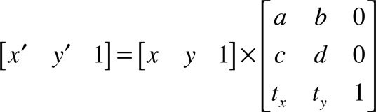 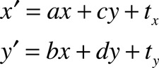
例如：
（1）一个二维点的坐标可以用一个1*3的矩阵表示，如：[X, Y, 1]; /// {X坐标值，Y坐标值，Z坐标值} 由于是二维的，那么第三列的值，用 1 填充。
（2）按照这样的计算公式计算：[X, Y, 1] * M = [aX + cY + tx, bX + dY + ty, 1];
（3）那么会得到一个新的点 [aX + cY + tx, bX + dY + ty, 1];
引用 通俗的解释仿射变换
现在讲讲 平移、缩放 旋转 三个矩阵的运算原理。
平移, 使用函数GGAffineTransform CGAffineMakeTranslation(CGFloat tx,CGFloat ty)
平移实际上是对矩阵M中的相关参数，设定了以下规则：
（1）a = 1；
（2）d = 1；
（3）b = 0；
（4）c = 0；
所以根据公式：[X, Y, 1] * M = [aX + cY + tx, bX + dY + ty, 1] 计算得到：
新的点坐标等于 [X + tx, Y + ty, 1]; /// {X坐标值，Y坐标值，Z坐标值}
要说明的是tx，ty 是指点坐标按照向量(tx, ty) 进行平移。
例如：tx = -2; ty = 20; 单位是像素。一般说明，点向左平移2个像素，向上平移20个像素。
缩放, 使用函数CGAffineTransform CGAffineTransformMakeScale(CGFloat sx, CGFloat sy)
缩放实际上是对矩阵M中的相关参数，设定了以下规则：
（1）b = 0；
（2）c = 0；
（3）tx = 0；
（4）ty = 0；
所以根据公式：[X, Y, 1] * M = [aX + cY + tx, bX + dY + ty, 1] 计算得到：
新的点坐标等于 [aX, dY, 1]; /// {X坐标值，Y坐标值，Z坐标值}
要说明的是a是X坐标的缩放系数，d是Y坐标的缩放系数。也就是说X坐标上的点按照a值比例系数缩放，Y坐标上的点按照d值比例系数缩放。
旋转, 使用函数CGAffineTransform CGAffineTransformMakeRotation(CGFloat angle)
缩放实际上是对矩阵M中的相关参数，设定了以下规则：
（1）a = cosɵ；
（2）b = sinɵ；
（3）c = -sinɵ；
（4）d = cosɵ；
（5）tx = 0；
（6）ty = 0；
所以根据公式：[X, Y, 1] * M = [aX + cY + tx, bX + dY + ty, 1] 计算得到：
新的点坐标等于 [Xcosɵ - Ysinɵ, Xsinɵ + Ycosɵ, 1]; /// {X坐标值，Y坐标值，Z坐标值}
要说明的是ɵ就是旋转的角度，逆时针为正，顺时针为负。
Transformations 扩展功能
/// 1.
/// CGAffineTransformTranslate //为一个Transformation(变换)再加上平移
CGAffineTransform CGAffineTransformTranslate (
CGAffineTransform t,
CGFloat tx,
CGFloat ty
);
/// 简单来说就是在变化 t 上在加上平移
/// 2.
/// CGAffineTransformScale //为一个Transformation(变换)再加上缩放
CGAffineTransform CGAffineTransformScale (
CGAffineTransform t,
CGFloat sx,
CGFloat sy
);
/// 3.
/// CGAffineTransformRotate //为一个Transformation(变换)再加上旋转
CGAffineTransform CGAffineTransformRotate (
CGAffineTransform t,
CGFloat angle
);
/// 4.
/// CGAffineTransformInvert //返回Transformation(变换)的反转
CGAffineTransform CGAffineTransformInvert (CGAffineTransform t);
/// 5.
/// CGAffineTransformConcat //合并两个Transformation
CGAffineTransform CGAffineTransformConcat (
CGAffineTransform t1,
CGAffineTransform t2)
;
/// 返回一个由 t1 和 t2 合并而成的Transformation
Transformations 应用
/// 1.
/// CGPointApplyAffineTransform //把变化应用到一个点上
CGPoint CGPointApplyAffineTransform (
CGPoint point,
CGAffineTransform t
);
// 这个方法的返回值还是一个CGPoint，
// 这个方法最终也只会影响这个点所在的位置
/// 2.
/// CGSizeApplyAffineTransform //把变化应用到一个区域中
CGSize CGSizeApplyAffineTransform (
CGSize size,
CGAffineTransform t
);
// 只会改变区域的大小
/// 3.
/// CGRectApplyAffineTransform //把变化应用到一个带原点的矩形
CGRect CGRectApplyAffineTransform (
CGRect rect,
CGAffineTransform t
);
// 测试三个属性 放缩、旋转和平移都有的一个Transformation ，
// 但处理之后只会改变这个区域原点的位置，和宽、高的大小，并不会旋转
检测 Transformation
// 1.
// CGAffineTransformIsIdentity // 检测一个Transformation是不是恒等变换，也就是说不变
bool CGAffineTransformIsIdentity ( CGAffineTransform t); /// 其结果返回一个BOOL值
// 2.
// CGAffineTransformEqualToTransform // 检测两个Transformation是否相等。
bool CGAffineTransformEqualToTransform (
CGAffineTransform t1,
CGAffineTransform t2
);
代码示例
1. 图片的缩放旋转
/// 图片的缩放旋转
- (void)transformImageView{
CGAffineTransform t = CGAffineTransformMakeScale(scale * previousScale,scale * previousScale);
t = CGAffineTransformRotate(t, rotation + previousRotation);
self.imageView.transform = t;
}
/// 1、首先创建了一个变换CGAffineTransform的一个对象 t ，这个变换是用来放缩的，里面的两个参数分别是对宽和高放大或缩小的倍数，这里是以相同比例放缩的。
/// 2、第二行句是在放缩变化中再加入角度的变换。
/// 3、最后把变换赋给图片视图的一个属性transform。
/// 就这么简单就实现了图片的旋转和放缩。
2. 水平翻转 与 垂直翻转
CGAffineTransformMakeScale (CGFloat sx, CGFloat sy);//创建一个给定比例放缩的变换视图引用了这个变换，那么图片的宽度就会变为 width*sx ，对应高度变为 hight * sy。
CGAffineTransformMakeScale(-1.0, 1.0);//水平翻转
CGAffineTransformMakeScale(1.0,-1.0);//垂直翻转
3. 角度旋转 与 弧度旋转
CGAffineTransform CGAffineTransformMakeRotation ( CGFloat angle); //创建一个旋转角度的变化
在这里可以看到参数并不是一个角度，但是它是把参数作为一个弧度，
然后把弧度再转换为角度来处理，其结果就可能是将一个图片视图旋转了多少度。
4. 创建一个平移的变化
//创建一个平移的变化
CGAffineTransform CGAffineTransformMakeTranslation (CGFloat tx,CGFloat ty);
这个就比较好理解了，假设是一个视图，那么它的起始位置 x 会加上tx , y 会加上 ty
CATransform3D: 主要用于 Layer，为 3D 变换使用
CGAffineTransform 与 CATransform3D 相互转换
iOS 中 UIKit 坐标系与 Quartz 2D 绘图坐标系的区别
IOS 中包含 UIKit 坐标系
UIKit 坐标系: X 轴正方向向右,Y 轴正方向向下, 原点在左上角。
坐标系的概念
在 iOS 中绘制图形必须在一个二维的坐标系中进行，但在 iOS 系统中存在多个坐标系，常需要处理一些坐标系的转换。
先介绍一个图形上下文(graphics context)的概念，比如说我们常用的 CGContext 就是 Quartz 2D 的上下文。 图形上下文包含绘制所需的信息，比如颜色、线宽、字体等。用我们在 Windows 常用的画图来参考，当我们使用画笔 🖌 在白板中写字时，图形上下文就是画笔的属性设置、白板大小、画笔位置等等。
iOS 中，每个图形上下文都会有三种坐标：
- 绘制坐标系（也叫用户坐标系），我们平时绘制所用的坐标系；
- 视图（view）坐标系，固定左上角为原点（0，0）的 view 坐标系；
- 物理坐标系，物理屏幕中的坐标系，同样是固定左上角为原点；
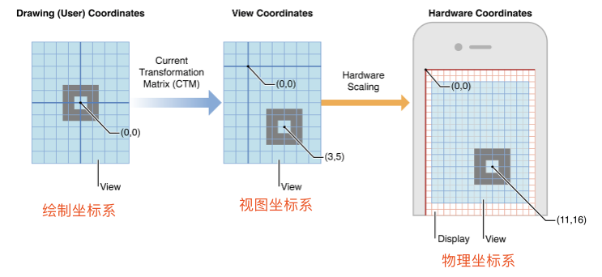
根据我们绘制的目标不同（屏幕、位图、PDF 等），会有多个 context；
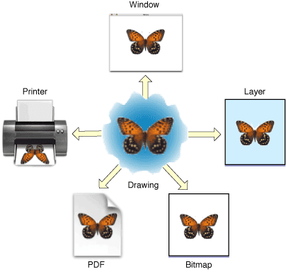
不同 context 的绘制坐标系各不相同: 比如说 UIKit 的坐标系为左上角原点的坐标系，CoreGraphics 的坐标系为左下角为原点的坐标系。
如下图：
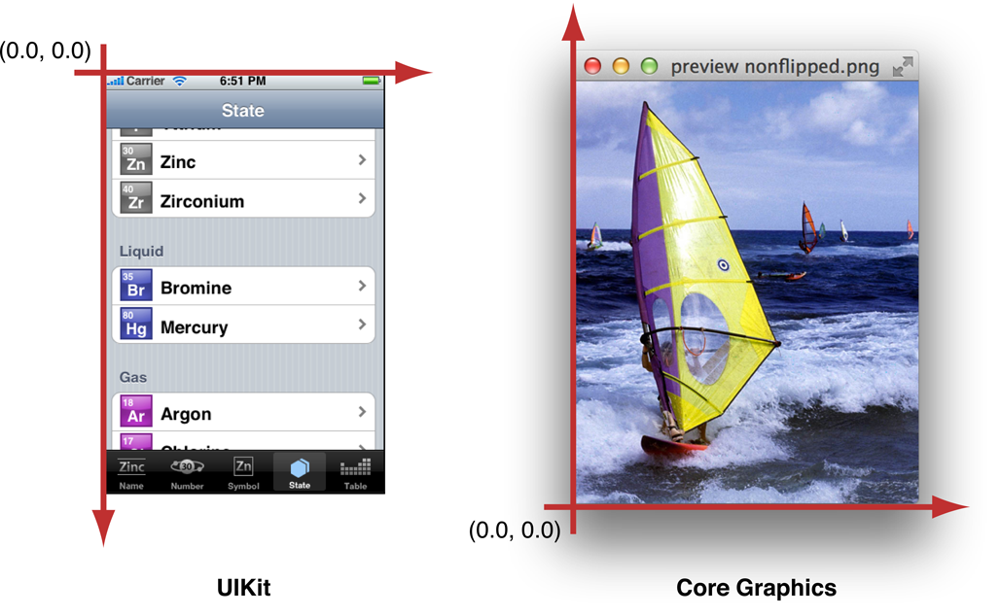
CoreGraphics 坐标系和 UIKit 坐标系的转换
CoreText 基于 CoreGraphics，所以坐标系也是 CoreGraphics 的坐标系。
我们回顾下上文提到的两个渲染结果，我们产生如下疑问： UIGraphicsGetCurrentContext 返回的是 CGContext，代表着是左下角为原点的坐标系，用 UILabel（UIKit 坐标系）可以直接 renderInContext，并且“测”字对应为 UILabel 的（0，0）位置，是在左上角？ 当用 CoreText 渲染时，坐标是（0，0），但是渲染的结果是在左上角，并不是在左下角；并且文字是上下颠倒的。 为了探究这个问题，我在代码中加入了一行 log：
NSLog(@"CGContext default matrix %@", NSStringFromCGAffineTransform(CGContextGetCTM(context)));
/// 输出结果为: CGContext default matrix [2, 0, 0, -2, 0, 200]
CGContextGetCTM 返回是 CGAffineTransform 仿射变换矩阵.
M = \begin{vmatrix} a&b&0\\c&d&0\\tx&ty&1 \end{vmatrix}
一个二维坐标系上的点 p，可以表达为(x, y, 1)，乘以变换的矩阵，如下
把结果相乘，得到下面的关系
此时，我们再来看看打印的结果[2, 0, 0, -2, 0, 200]，可以化简为 x' = 2x, y' = 200 - 2y 因为渲染的 view 高度为 100，所以这个坐标转换相当于把原点在左下角（0，100）的坐标系，转换为原点在左上角（0，0）的坐标系！通常我们都会使用 UIKit 进行渲染，所以 iOS 系统在 drawRect 返回 CGContext 的时候，默认帮我们进行了一次变换，以方便开发者直接用 UIKit 坐标系进行渲染。
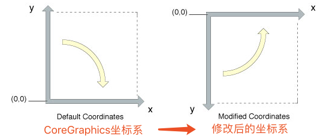
我们尝试对系统添加的坐标变换进行还原： 先进行CGContextTranslateCTM(context, 0, self.bounds.size.height); 对于x' = 2x, y' = 200 - 2y，我们使得x=x,y=y+100；（self.bounds.size.height=100） 于是有x' = 2x, y' = 200-2(y+100) = -2y; 再进行CGContextScaleCTM(context, 1.0, -1.0); 对于x' = 2x, y' = -2y，我们使得x=x, y=-y; 于是有 x'=2x, y' = -2(-y) = 2y
- (void)drawRect:(CGRect)rect {
[super drawRect:rect];
CGContextRef context = UIGraphicsGetCurrentContext();
CGContextTranslateCTM(context, 0, self.bounds.size.height);
CGContextScaleCTM(context, 1.0, -1.0);
NSLog(@"CGContext default matrix %@", NSStringFromCGAffineTransform(CGContextGetCTM(context)));
NSAttributedString *attrStr = [[NSAttributedString alloc] initWithString:@"测试文本" attributes:@{
NSForegroundColorAttributeName:[UIColor whiteColor],
NSFontAttributeName:[UIFont systemFontOfSize:14],
}];
CTFramesetterRef frameSetter = CTFramesetterCreateWithAttributedString((__bridge CFAttributedStringRef) attrStr); // 根据富文本创建排版类CTFramesetterRef
UIBezierPath * bezierPath = [UIBezierPath bezierPathWithRect:CGRectMake(0, 0, 100, 20)];
CTFrameRef frameRef = CTFramesetterCreateFrame(frameSetter, CFRangeMake(0, 0), bezierPath.CGPath, NULL); // 创建排版数据
CTFrameDraw(frameRef, context);
}
通过 log 也可以看出来 CGContext default matrix [2, 0, -0, 2, 0, 0]； 最终结果如下，文本从左下角开始渲染，并且没有出现上下颠倒的情况。
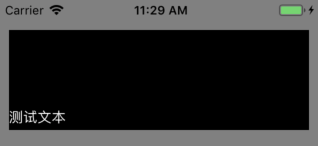
这时我们产生新的困扰： 用 CoreText 渲染文字的上下颠倒现象解决，但是修改后的坐标系 UIKit 无法正常使用，如何兼容两种坐标系？ iOS 可以使用 CGContextSaveGState()方法暂存 context 状态，然后在 CoreText 绘制完后通过 CGContextRestoreGState()可以恢复 context 的变换。
- (void)drawRect:(CGRect)rect {
[super drawRect:rect];
CGContextRef context = UIGraphicsGetCurrentContext();
NSLog(@"CGContext default matrix %@", NSStringFromCGAffineTransform(CGContextGetCTM(context)));
CGContextSaveGState(context);
CGContextTranslateCTM(context, 0, self.bounds.size.height);
CGContextScaleCTM(context, 1.0, -1.0);
NSAttributedString *attrStr = [[NSAttributedString alloc] initWithString:@"测试文本" attributes:@{
NSForegroundColorAttributeName:[UIColor whiteColor],
NSFontAttributeName:[UIFont systemFontOfSize:14],
}];
CTFramesetterRef frameSetter = CTFramesetterCreateWithAttributedString((__bridge CFAttributedStringRef) attrStr); // 根据富文本创建排版类CTFramesetterRef
UIBezierPath * bezierPath = [UIBezierPath bezierPathWithRect:CGRectMake(0, 0, 100, 20)];
CTFrameRef frameRef = CTFramesetterCreateFrame(frameSetter, CFRangeMake(0, 0), bezierPath.CGPath, NULL); // 创建排版数据
CTFrameDraw(frameRef, context);
CGContextRestoreGState(context);
NSLog(@"CGContext default CTM matrix %@", NSStringFromCGAffineTransform(CGContextGetCTM(context)));
UILabel *testLabel = [[UILabel alloc] initWithFrame:CGRectMake(0, 0, 100, 20)];
testLabel.text = @"测试文本";
testLabel.font = [UIFont systemFontOfSize:14];
testLabel.textColor = [UIColor whiteColor];
[testLabel.layer renderInContext:context];
}
渲染结果如下，控制台输出的两个 matrix 都是[2, 0, 0, -2, 0, 200]；
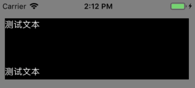
遇到的问题
1. UILabel.layer 在 drawContext 的时候 frame 失效
初始化 UILabel 时设定了 frame，但是没有生效。 UILabel *testLabel = [[UILabel alloc] initWithFrame:CGRectMake(20, 20, 100, 28)];这是因为 frame 是在上一层 view 中坐标的偏移，在 renderInContext 中坐标起点与 frame 无关，所以需要修改的是 bounds 属性： testLabel.layer.bounds = CGRectMake(50, 50, 100, 28);
2. 在把 UILabel.layer 渲染到 context 的时候，应该采用 drawInContext 还是 renderInContext？
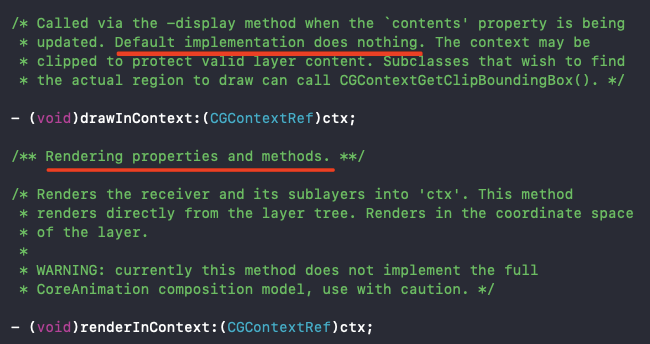
虽然这两个方法都可以生效，但是根据画线部分的内容来判断，还是采用了 renderInContext，并且问题 1 就是由这里的一句 Renders in the coordinate space of the layer，定位到问题所在。
3. 如何理解 CoreGraphics 坐标系不一致后，会出现绘制结果异常？
我的理解方法是，我们可以先不考虑坐标系变换的情况。 如下图，上半部分是普通的渲染结果，可以很容易的想象； 接下来是增加坐标变换后，坐标系变成原点在左上角的顶点，相当于按照下图的虚线进行了一次垂直的翻转。
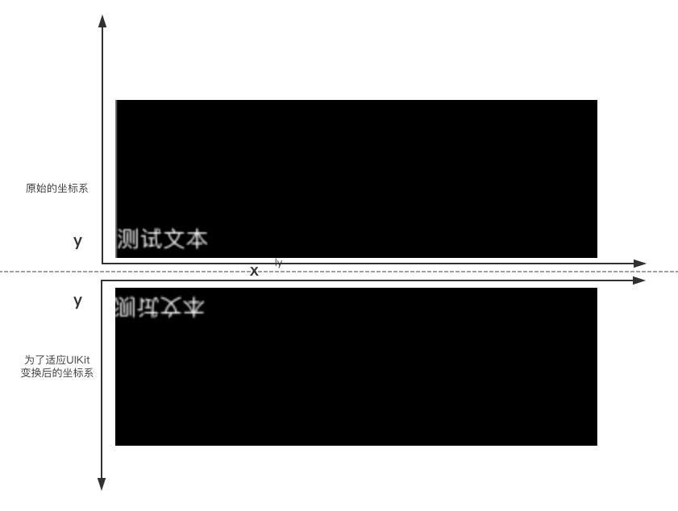
也可以按照坐标系变换的方式去理解，将左下角原点的坐标系相对 y 轴做一次垂直翻转，然后向上平移 height 的高度，这样得到左上角原点的坐标系。
附录 Drawing and Printing Guide for iOS Quartz 2D Programming Guide
iOS 代码示例
1. 把中心点为 A(50,50)长为 20,宽为 10 的矩形以 X 轴逆时针旋转 45 度
- (void)drawRect:(CGRect)rect{
/**
* UIKit坐标系，原点在UIView左上角
*/
CGContextRef context = UIGraphicsGetCurrentContext();
CGContextSaveGState(context);
CGAffineTransform transform;
/**
* 变换后 transform = CBA,显然不是想要的结果.
* 这是由于CGAffineTransform变换函数构造的矩阵在左边,如:
* t' = CGAffineTransformTranslate(t,tx,ty)
* 结果为:t' = [ 1 0 0 1 tx ty ] * t
* 累积变换就会得到上面的结果
*/
transform = CGAffineTransformIdentity;
transform = CGAffineTransformTranslate(transform, -50, -50); //A
transform = CGAffineTransformRotate(transform, M_PI_4); //B
transform = CGAffineTransformTranslate(transform, 50, 50); //C
/**
* 为了得到正确结果,调整顺序如下:
*/
transform = CGAffineTransformIdentity;
transform = CGAffineTransformTranslate(transform, 50, 50); //C
transform = CGAffineTransformRotate(transform, M_PI_4); //B
transform = CGAffineTransformTranslate(transform, -50, -50); //A
/**
* context函数变换
*/
//CGContextTranslateCTM(context, 50, 50); //C
//CGContextRotateCTM(context, M_PI_4); //B
//CGContextTranslateCTM(context, -50, -50); //A
CGContextConcatCTM(context, transform);
/**
* 绘制矩形
*/
CGContextFillRect(context, CGRectMake(40, 45, 20, 10));
CGContextRestoreGState(context);
}
2. 绘制图片
void drawImage(CGContextRef context, CGImageRef image , CGRect rect){
/**
* 注意变换顺序A->B->C->D
*/
CGContextSaveGState(context);
/**
* 矩形回到起始位置
*/
CGContextTranslateCTM(context, rect.origin.x, rect.origin.y); //D
/**
* 矩形Y轴正方向平移rect.size.height
*/
CGContextTranslateCTM(context, 0, rect.size.height); //C
/**
* 垂直反转矩形
*/
CGContextScaleCTM(context, 1.0, -1.0); //B
/**
* 矩形平移到原点
*/
CGContextTranslateCTM(context, -rect.origin.x, -rect.origin.y);//A
/**
* 绘制图片
*/
CGContextDrawImage(context, rect, image);
CGContextRestoreGState(context);
}
3. 坐标轴变换
/**
* 原坐标系为Quartz 2D,目标坐标系为UKit,用原坐标系中坐标绘图
*/
- (void)drawRect:(CGRect)rect
{
//UKit坐标系
CGContextRef context = UIGraphicsGetCurrentContext();
CGContextSaveGState(context);
CGRect bounds = self.bounds;
/**
* 坐标轴变换A->B
*/
/**
* 平移坐标轴
*/
CGContextTranslateCTM(context, 0, bounds.size.height); // B
/**
* 翻转Y坐标轴
*/
CGContextScaleCTM(context, 1, -1); //A
/**
* 绘制矩形
*/
CGContextFillRect(context, CGRectMake(10, 10, 20, 20));
CGContextRestoreGState(context);
}
标准的 Quartz 2D 绘图坐标系
Quartz 2D 绘图坐标系：X 轴正方向向右,Y 轴正方向向上， 原点在左下角。
CoreGraphics 与 Quartz 2D 的关系
CGContextSaveGState 与 CGContextRestoreGState 的作用
使用 Quartz 时涉及到一个图形上下文，其中图形上下文中包含一个保存过的图形状态堆栈。在 Quartz 创建图形上下文时，该堆栈是空的。CGContextSaveGState 函数的作用是将当前图形状态推入堆栈。之后，您对图形状态所做的修改会影响随后的描画操作，但不影响存储在堆栈中的拷贝。在修改完成后，您可以通过 CGContextRestoreGState 函数把堆栈顶部的状态弹出，返回到之前的图形状态。这种推入和弹出的方式是回到之前图形状态的快速方法，避免逐个撤消所有的状态修改；这也是将某些状态（比如裁剪路径）恢复到原有设置的唯一方式。
/// iOS
UIGraphicsBeginImageContextWithOptions(targetRect.size, YES, 0.0);
CGContextRef context = UIGraphicsGetCurrentContext();
float myFillColor[] = {1,0,0,1}; //red;
CGContextSaveGState(context);
CGContextSetRGBFillColor(context, 0,1,1,1);
CGContextFillRect(context, targetRect);
CGContextSetFillColor(context, myFillColor);
CGContextFillEllipseInRect(context, targetRect);
CGContextFillPath(context);
CGContextRestoreGState(context);
UIImage *uiImage = UIGraphicsGetImageFromCurrentImageContext();
UIGraphicsEndImageContext();
例子：绘制一条直线
iOS
CGContextRef context = UIGraphicsGetCurrentContext(); //设置上下文
//画一条线
CGContextSetStrokeColorWithColor(context, [UIColor redColor].CGColor);//线条颜色
CGContextSetLineWidth(context, 5.0);//线条宽度
CGContextMoveToPoint(context, 20, 20); //开始画线, x，y 为开始点的坐标
CGContextAddLineToPoint(context, 300, 20);//画直线, x，y 为线条结束点的坐标
CGContextStrokePath(context); //开始画线
macOS
例子：绘制一条弧线
iOS
CGContextRef context = UIGraphicsGetCurrentContext(); //设置上下文
//画弧线
CGContextSetRGBStrokeColor(context, 0.3, 0.4, 0.5, 1);//线条颜色
CGContextAddArc(context, 180, 200, 50, 0, 180*(M_PI/180), 0);
CGContextStrokePath(context);//开始画线
macOS
例子：绘制贝兹曲线
iOS
CGContextRef context = UIGraphicsGetCurrentContext(); //设置上下文
//绘制贝兹曲线
//贝兹曲线是通过移动一个起始点，然后通过两个控制点,还有一个中止点，调用CGContextAddCurveToPoint() 函数绘制
CGContextSetLineWidth(context, 2.0);
CGContextSetStrokeColorWithColor(context, [UIColor blueColor].CGColor);
CGContextMoveToPoint(context, 10, 10);
CGContextAddCurveToPoint(context, 200, 50, 100, 400, 300, 400);
CGContextStrokePath(context);
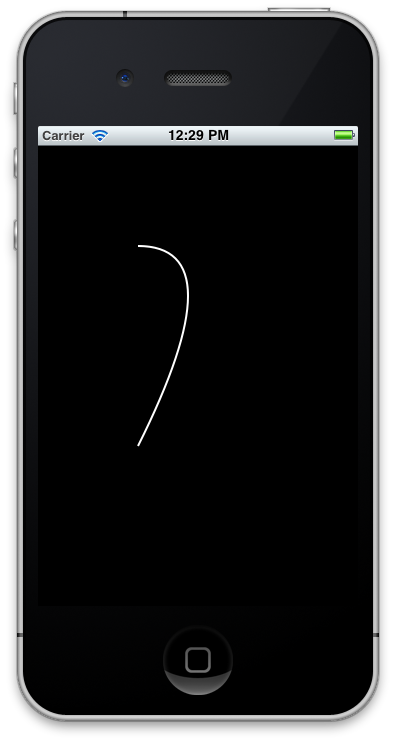
// 画贝塞尔曲线
CGContextRef context = UIGraphicsGetCurrentContext();
CGContextSetRGBStrokeColor(context, 255.0f, 255.0f, 255.0f, 1.0f);
CGContextMoveToPoint(context, 100.0f, 100.0f); // 端点一
CGContextSetLineWidth(context, 2.0f);
// (200, 150) 控制点一 (50, 200) 控制点二 (100,300) 端点二
//CGContextAddCurveToPoint(context, 200, 150, 50, 200, 100, 300); // 三次塞尔曲线
// (200,100) 控制点一 (100,300) 端点二
CGContextAddQuadCurveToPoint(context, 200, 100, 100, 300); // 二次塞尔曲线
CGContextStrokePath(context);
macOS
例子：绘制连续曲线
iOS
CGContextRef context = UIGraphicsGetCurrentContext(); //设置上下文
//绘制连续的曲线
CGContextSetLineWidth(context, 5.0);
CGContextSetStrokeColorWithColor(context, [UIColor greenColor].CGColor);
CGContextMoveToPoint(context, 230, 150);//开始画线, x，y 为开始点的坐标
CGContextAddCurveToPoint(context, 310, 100, 300, 200, 220, 220);//画三次点曲线
CGContextAddCurveToPoint(context, 290, 140, 280, 180, 240, 190);//画三次点曲线
CGContextStrokePath(context);//开始画线
macOS
例子：绘制虚线
iOS
CGContextRef context = UIGraphicsGetCurrentContext(); //设置上下文
//绘制虚线
CGContextSetRGBStrokeColor(context, 0.1, 0.2, 0.3, 1);//线条颜色
float dashArray1[] = {3, 2};
CGContextSetLineDash(context, 0, dashArray1, 2);//画虚线,可参考http://blog.csdn.net/zhangao0086/article/details/7234859
CGContextMoveToPoint(context, 5, 70);//开始画线, x，y 为开始点的坐标
CGContextAddLineToPoint(context, 310, 70);//画直线, x，y 为线条结束点的坐标
CGContextStrokePath(context);//开始画线
macOS
例子：绘制虚曲线
iOS
CGContextRef context = UIGraphicsGetCurrentContext(); //设置上下文
//绘制虚曲线
CGContextSetRGBStrokeColor(context, 0.3, 0.2, 0.1, 1);//线条颜色
float dashArray2[] = {3, 2, 10};
CGContextSetLineDash(context, 0, dashArray2, 3);//画虚线
CGContextMoveToPoint(context, 5, 90);//开始画线, x，y 为开始点的坐标
CGContextAddCurveToPoint(context, 200, 50, 100, 400, 300, 400);
CGContextStrokePath(context);//开始画线
macOS
例子：绘制连续虚曲线
iOS
CGContextRef context = UIGraphicsGetCurrentContext(); //设置上下文
//绘制连续的曲线
CGContextSetLineWidth(context, 5.0);
float dashArray3[] = {3, 2, 10, 20, 5};
CGContextSetLineDash(context, 0, dashArray3, 5);//画虚线
CGContextSetStrokeColorWithColor(context, [UIColor greenColor].CGColor);
CGContextMoveToPoint(context, 5, 400);//开始画线, x，y 为开始点的坐标
CGContextAddCurveToPoint(context, 50, 200, 80, 300, 100, 220);//画三次点曲线
CGContextAddQuadCurveToPoint(context, 150, 100, 200, 200);//画二次点曲线
CGContextAddCurveToPoint(context, 240, 400, 10, 50, 300, 300);//画三次点曲线
CGContextStrokePath(context);//开始画线
macOS
例子：绘制没有边框的正方形
iOS
CGContextRef context = UIGraphicsGetCurrentContext(); //设置上下文
//画一个方形图形 没有边框
CGContextSetRGBFillColor(context, 0, 0.25, 0, 0.5); //方框的填充色
CGContextFillRect(context, CGRectMake(5, 150, 100, 100)); //画一个方框
macOS
例子：绘制正方形边框
iOS
//画方形边框
CGContextRef context5 = UIGraphicsGetCurrentContext(); //设置上下文
CGContextSetLineWidth(context5, 3.0);
CGContextSetRGBStrokeColor(context5, 0.8, 0.1, 0.8, 1);
CGContextStrokeRect(context5, CGRectMake(5, 5, 300, 400));//画方形边框, 参数2:方形的坐标。
macOS
例子：绘制圆角矩形
iOS
// 画一个圆角矩形
CGContextRef contextRef = UIGraphicsGetCurrentContext();
CGContextSetRGBStrokeColor(contextRef, 1.0f, 1.0f, 1.0f, 1);
CGContextSetLineWidth(contextRef, 20.0f);
CGContextAddRect(contextRef, CGRectMake(50.0f, 50.0f, 100.0f, 100.0f));
CGContextStrokePath(contextRef);
CGLineJoin lineJoin = kCGLineJoinRound;
CGContextSetLineJoin(contextRef, lineJoin);
CGContextStrokePath(contextRef);
macOS
例子：绘制菱形
iOS
CGContextRef context5 = UIGraphicsGetCurrentContext(); //设置上下文
//画一个菱形
CGContextSetLineWidth(context, 2.0);
CGContextSetStrokeColorWithColor(context, [UIColor blueColor].CGColor);
CGContextMoveToPoint(context, 100, 100);
CGContextAddLineToPoint(context, 150, 150);
CGContextAddLineToPoint(context, 100, 200);
CGContextAddLineToPoint(context, 50, 150);
CGContextAddLineToPoint(context, 100, 100);
CGContextStrokePath(context);
macOS
例子：绘制椭圆
iOS
CGContextRef context5 = UIGraphicsGetCurrentContext(); //设置上下文
//画椭圆
CGRect aRect= CGRectMake(80, 80, 160, 100);
CGContextSetRGBStrokeColor(context, 0.6, 0.9, 0, 1.0);
CGContextSetLineWidth(context, 3.0);
CGContextAddEllipseInRect(context, aRect); //椭圆, 参数2:椭圆的坐标。
CGContextDrawPath(context, kCGPathStroke);
macOS
例子：绘制实心圆
iOS
CGContextRef context5 = UIGraphicsGetCurrentContext(); //设置上下文
//画实心圆
CGContextFillEllipseInRect(context, CGRectMake(95, 195, 200.0, 100));//画实心圆,参数2:圆坐标。可以是椭圆
macOS
例子：绘制实心矩形和实心圆
iOS
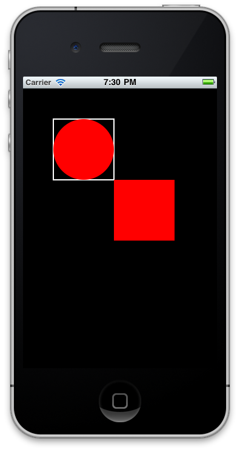
// 实心圆 实心矩形
CGContextRef contextRef = UIGraphicsGetCurrentContext();
CGContextSetRGBStrokeColor(contextRef, 1.0f, 1.0f, 1.0f, 1);
CGContextSetLineWidth(contextRef, 2.0f);
CGFloat components[] = { 1.0f, 0.0f, 0.0f, 1.0f};
CGContextSetFillColor(contextRef, components);
CGContextAddRect(contextRef, CGRectMake(50.0f, 50.0f, 100.0f, 100.0f));
CGContextStrokePath(contextRef);
CGContextFillEllipseInRect(contextRef, CGRectMake(50.0f, 50.0f, 100.0f, 100.0f));
CGContextFillRect(contextRef, CGRectMake(150.0f, 150.0f, 100.0f, 100.0f));
macOS
例子：绘制一段路径
iOS
CGContextRef context5 = UIGraphicsGetCurrentContext(); //设置上下文
//填充了一段路径:
CGContextMoveToPoint(context, 100, 100);
CGContextAddLineToPoint(context, 150, 150);
CGContextAddLineToPoint(context, 100, 200);
CGContextAddLineToPoint(context, 50, 150);
CGContextAddLineToPoint(context, 100, 100);
CGContextSetFillColorWithColor(context, [UIColor redColor].CGColor);
CGContextFillPath(context);
macOS
例子：绘制不规则形状
iOS
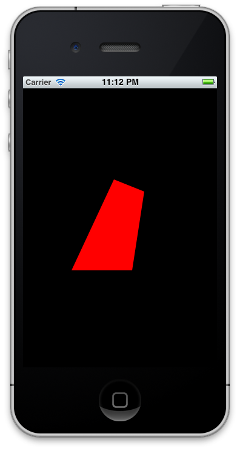 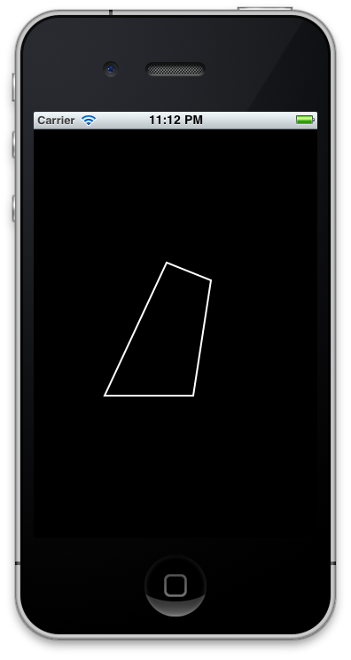
// 画不规则形状
CGContextRef contextRef = UIGraphicsGetCurrentContext();
CGContextSetRGBStrokeColor(contextRef, 1.0f, 1.0f, 1.0f, 1); // 填充时用不到
CGContextSetLineWidth(contextRef, 2.0f); // 填充时用不到
CGFloat components[] = { 1.0f, 0.0f, 0.0f, 1.0f};
CGContextSetFillColor(contextRef, components);
CGContextMoveToPoint(contextRef, 150.0f, 150.0f);
CGContextAddLineToPoint(contextRef, 200.0f, 170.0f);
CGContextAddLineToPoint(contextRef, 180.0f, 300.0f);
CGContextAddLineToPoint(contextRef, 80.0f, 300.0f);
CGContextClosePath(contextRef);
//CGContextFillPath(contextRef); // 填充
CGContextStrokePath(contextRef); // 不填充
macOS
例子：绘制矩形和椭圆
iOS
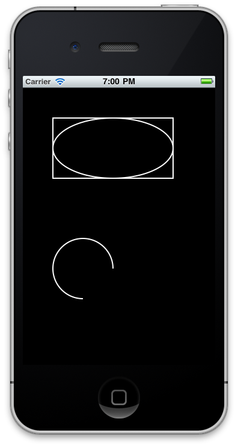
// 画矩形和圆形(椭圆也是圆哦)
CGContextRef contextRef = UIGraphicsGetCurrentContext();
CGContextSetRGBStrokeColor(contextRef, 1.0f, 1.0f, 1.0f, 1);
CGContextSetLineWidth(contextRef, 2.0f);
CGContextAddRect(contextRef, CGRectMake(50.0f, 50.0f, 200.0f, 100.0f));
CGContextAddEllipseInRect(contextRef, CGRectMake(50.0f, 50.0f, 200.0f, 100.0f));
CGContextStrokePath(contextRef);
// 画圆弧
// CGContextAddArc(contextRef, <#CGFloat x#>, <#CGFloat y#>, <#CGFloat radius#>, <#CGFloat startAngle#>, <#CGFloat endAngle#>, <#int clockwise#>)
// 圆心， 半径， 起始角度， 结束角度， 1，顺时针 0，逆时针
CGContextAddArc(contextRef, 100.0f, 300.0f, 50.0f, 0.0f * ( M_PI/180 ), 90.0f * ( M_PI/180 ), 1);
CGContextStrokePath(contextRef);
macOS
例子：绘制饼图
iOS
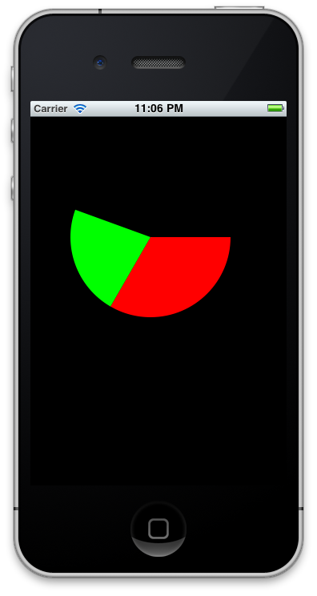
// 画扇形
// 红色部分
CGContextRef contextRef = UIGraphicsGetCurrentContext();
CGFloat components[] = { 1.0f, 0.0f, 0.0f, 1.0f};
CGContextSetFillColor(contextRef, components);
CGContextMoveToPoint(contextRef, 150.0f, 150.0f);
CGContextAddArc(contextRef, 150.0f, 150.0f, 100.0f, 0 * (M_PI / 180.0f), 120 * (M_PI / 180.0f), 0);
CGContextFillPath(contextRef);
// 绿色部分
CGFloat blueComponents[] = { 0.0f, 1.0f, 0.0f, 1.0f};
CGContextSetFillColor(contextRef, blueComponents);
CGContextMoveToPoint(contextRef, 150.0f, 150.0f);
CGContextAddArc(contextRef, 150.0f, 150.0f, 100.0f, 120 * (M_PI / 180.0f), 200 * (M_PI / 180.0f), 0);
CGContextFillPath(contextRef);
macOS